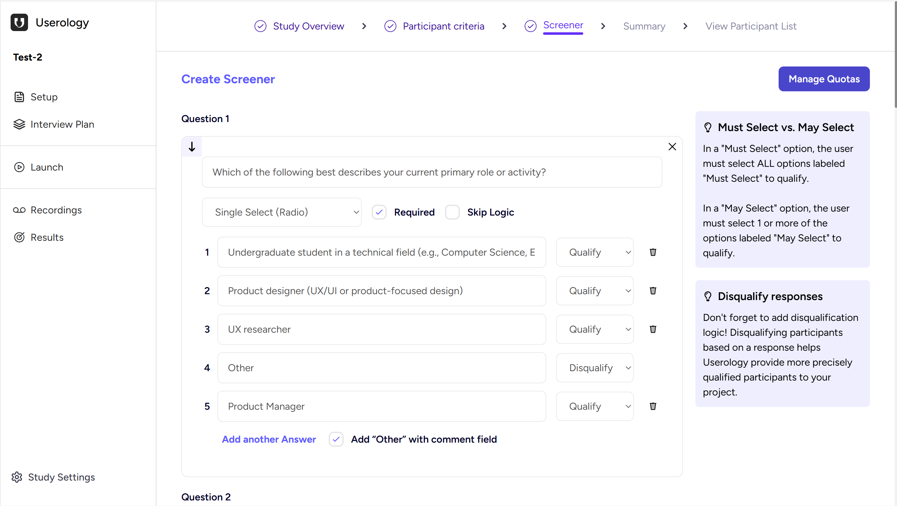
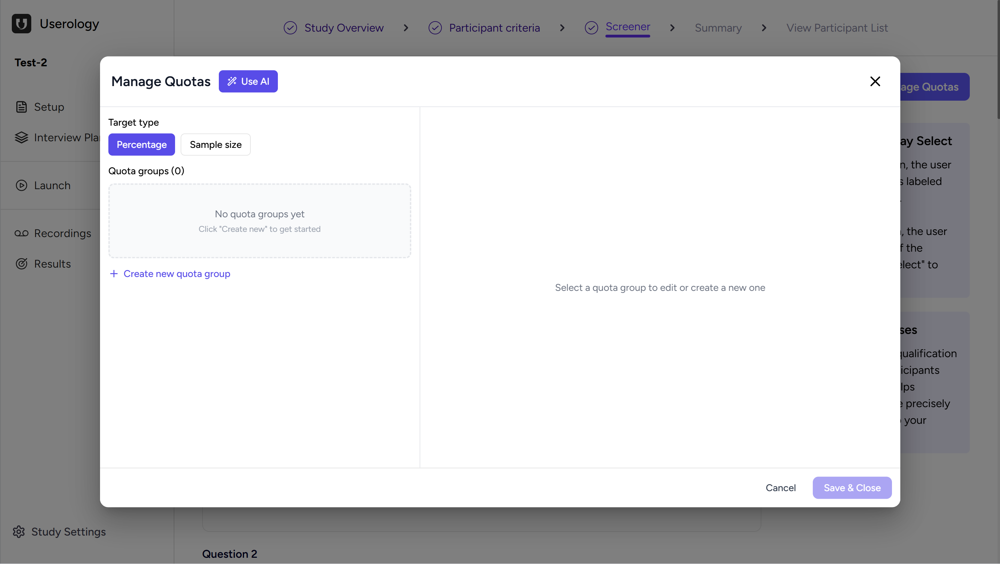
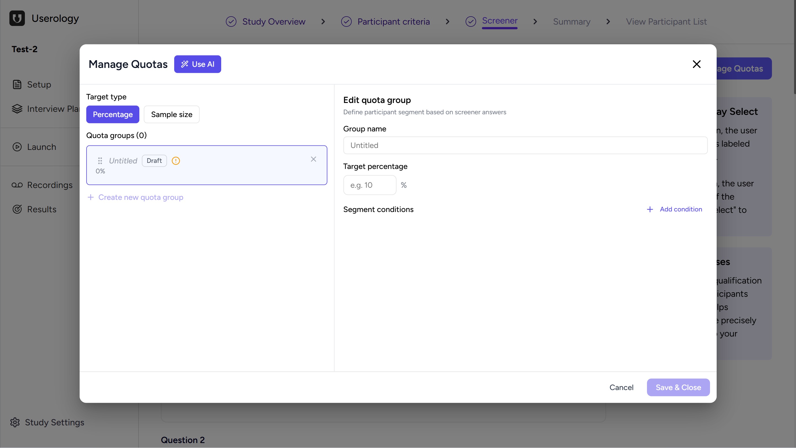
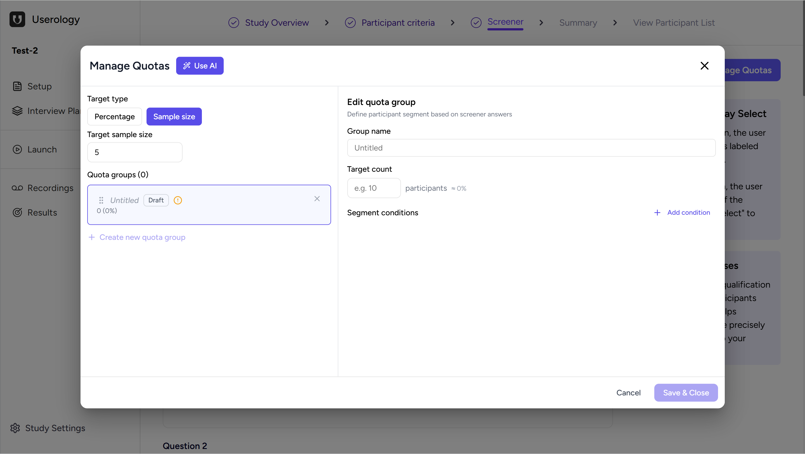
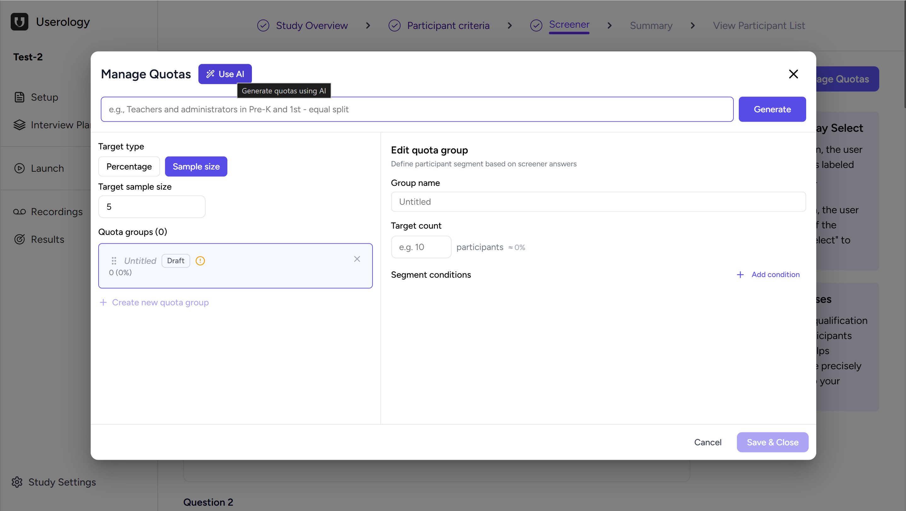

The Manage Quotas feature helps you control who gets recruited into your study and in what proportion. It allows you to set limits on how many participants can be selected from specific groups, based on their answers to screener questions. This ensures your study includes the right mix of participants instead of too many from a single category.
You can use Manage Quotas while setting up the Screener as part of study setup or participant recruitment.
In This Article
Accessing Manage Quotas
While creating or editing screener questions, you'll see a Manage Quotas button in the top-right corner of the Screener section. Clicking this button opens the Manage Quotas window, where all quota-related settings are configured.

What You See When You Open Manage Quotas
When Manage Quotas is opened for the first time, there are no quota groups created. The screen shows an empty state with an option to create a new quota group. This is where you begin defining how participants should be distributed across different segments.

At the top, you can also choose how you want to define quotas using the Target type option.
Choosing How to Set Quotas
You can define quotas in two ways: Percentage or Sample size.
Percentage
When Percentage is selected, each quota group is assigned a percentage of the total participants. For example, you can decide that a certain segment should make up a specific portion of your overall study. This option is useful when you want proportional representation.

Sample Size
When Sample size is selected, you first define the total number of participants for the study. Each quota group then gets a fixed number of participants. This is helpful when you already know exactly how many participants you want from each segment.

You can switch between Percentage and Sample size at any time.
Creating a Quota Group
To start setting quotas, click Create new quota group. A new group is added in a draft state. Each quota group represents a specific participant segment that you want to control.
You can create multiple quota groups, depending on how many segments you want to manage.
Editing a Quota Group
When you select a quota group, you can define its details:
Group name: Give the group a name so it's easy to identify later.
Target: Set the target, either as a percentage or as a participant count, depending on the target type you selected earlier.
Segment conditions: Define conditions based on answers to screener questions. These determine which participants belong to this quota group.
Click Add condition to specify the segment you want to include.
Generating Quotas Using AI
Manage Quotas also includes a Use AI option. This allows you to describe, in simple text, how you want participants to be split across different groups. After entering the description, click Generate, and quota groups are created automatically based on your input.

This helps speed up setup when you already have a clear idea of your participant distribution.
Managing and Saving Quotas
You can view all created quota groups in one place and see their status. Quota groups can be edited, removed, or added as needed. As participants are recruited, quotas are filled based on the rules you set.
Once everything is configured, click Save & Close to apply the quotas. These quotas are then enforced during participant recruitment, ensuring that participants are selected only until each quota is met.
Why Use Manage Quotas?
Manage Quotas helps you recruit participants in a controlled and structured way. It prevents over-recruitment from any one group and ensures your study includes the participants that best match your research needs.
Key benefits include:
Balanced representation: Ensure proportional distribution across different participant segments.
Controlled recruitment: Set limits to prevent over-recruitment from any single group.
Faster setup with AI: Use natural language to describe your quota needs and let AI generate the groups.
Flexible targeting: Choose between percentage-based or fixed sample size quotas.